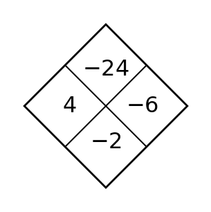
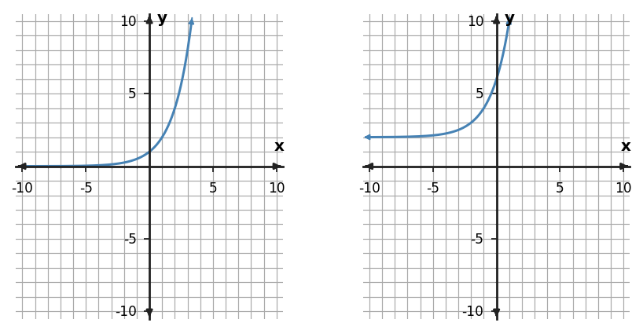

1
Complete the Diamond Problem. The top is the product of the side numbers and the bottom is their sum.

Complete the Diamond Problem. The top is the product of the side numbers and the bottom is their sum.
Compare $y=x^2-4$ and $y=6(3)^x$. Which has a turning point, and which has a constant multiplicative rate?
Table A has outputs [2, 7, 12, 17]; Table B has outputs [16, 9, 4, 1]; Table C has outputs ['3', '1.5', '0.75', '0.375'] for consecutive integer inputs. Match A, B, and C to linear, quadratic, and exponential families and cite the pattern used.
Relationship A is $y=3x+2$. Relationship B has values $(0,2)$,$(1,6)$,$(2,18)$,$(3,54)$. Compare the two families and the way each changes.
Choose the most appropriate function family for the table and support the choice with a difference pattern.
| $x$ | -3 | -2 | -1 | 0 | 1 |
|---|---|---|---|---|---|
| $y$ | 10 | 7 | 6 | 7 | 10 |
Choose the most appropriate function family for the table and support the choice with a ratio pattern.
| $x$ | 0 | 1 | 2 | 3 |
|---|---|---|---|---|
| $y$ | 10 | 20 | 40 | 80 |
Relationship A is $y=4x-1$. Relationship B has values $(0,5)$,$(1,10)$,$(2,20)$,$(3,40)$. Compare the two families and the way each changes.
For $x^2-3x-10=0$, choose the most efficient method from factoring, completing the square, or the quadratic formula, then solve.
Choose the most appropriate function family for the table and support the choice with a difference pattern.
| $x$ | 0 | 1 | 2 | 3 | 4 |
|---|---|---|---|---|---|
| $y$ | 11 | 5 | 3 | 5 | 11 |
Relationship A is $y=-2x+7$. Relationship B has values $(0,3)$,$(1,12)$,$(2,48)$,$(3,192)$. Compare the two families and the way each changes.
For $x^2+8x-9=0$, explain why completing the square is a reasonable method, then solve.
For $3x^2+4x-2=0$, explain why the quadratic formula is a reliable choice and give the exact solutions.
Complete the Diamond Problem. The top is the product of the side numbers and the bottom is their sum.

The right-hand graph in the exponential panel is a transformation of $2^x$. Identify the horizontal asymptote and whether it represents growth or decay.

Use the table to state the growth factor and write one exponential rule that fits when the first value occurs at $x=0$.
| $x$ | 0 | 1 | 2 | 3 |
|---|---|---|---|---|
| $y$ | 5 | 10 | 20 | 40 |
For $y=6(0.5)^x-2$, state the y-intercept and horizontal asymptote.
Describe the horizontal and vertical translation from $f(x)=|x|$ to $g(x)=|x+2|+4$.
Write a transformed rule for $f(x)=3^x$ shifted 1 unit(s) right.
For $y=2(3)^x+5$, state the y-intercept and horizontal asymptote.
Rewrite $y=x^2+6x+12$ in vertex form by completing the square, then state the vertex.
Describe the horizontal and vertical translation from $f(x)=|x|$ to $g(x)=|x+5|+2$.
For $y=5(1.5)^x-4$, state the y-intercept and horizontal asymptote.
Rewrite $y=x^2-10x+26$ in vertex form by completing the square, then state the vertex.
What term must be added to $x^2-8x$ to create a perfect-square trinomial? Write the resulting square.
Complete the Diamond Problem. The top is the product of the side numbers and the bottom is their sum.

Explain why $y=8(0.75)^x$ is exponential and whether it represents growth or decay.
A quantity is multiplied by 1.3 each hour. Identify the function family and interpret the factor 1.3.
The outputs for consecutive integer inputs are 3, 9, 27, 81. Identify the relationship as exponential and state the ratio.
For $y=1.5|x-1|-3$, state the vertex and describe the rate of change on each side of the vertex.
Use the symmetric table to locate the vertex and identify an absolute-value rule with scale factor 0.5.
| $x$ | -3 | -2 | -1 | 0 | 1 |
|---|---|---|---|---|---|
| $y$ | 3 | 2.5 | 2 | 2.5 | 3 |
The outputs for consecutive integer inputs are 8, 4, 2, 1. Identify the relationship as exponential and state the ratio.
Factor and solve $x^2-7x+6=0$.
For $y=-2|x+4|+3$, state the vertex and describe the rate of change on each side of the vertex.
The outputs for consecutive integer inputs are 2, 8, 32, 128. Identify the relationship as exponential and state the ratio.
Factor and solve $x^2+x-12=0$.
A height model factors as $h(t)=-4(t-0)(t-5)$. At what times is the height 0, and which times are meaningful if $t$ is seconds after launch?
Complete the Diamond Problem. The top is the product of the side numbers and the bottom is their sum.

For $P(t)=75(1.25)^t$, state the percent change per time unit and whether the model is growth or decay.
Use $N(t)=80(0.75)^t$ to predict $N(3)$.
A quantity starts at 750 and decreases by 12% per year. Write an exponential model for its value after $t$ years.
Use the scatterplot shape and the changing pattern to choose a reasonable model family. Give one reason.

A rental model is $C(h)=5+7h$ for $0\le h\le 6$. Predict the cost for 4 hours and interpret the result.
A quantity starts at 120 and grows by 5% per year. Write an exponential model for its value after $t$ years.
A profit model is $P(x)=-(x-1)(x-8)$. Find the zeros and interpret them as break-even input values.
Use the scatterplot shape and the changing pattern to choose a reasonable model family. Give one reason.

A quantity starts at 500 and decreases by 20% per year. Write an exponential model for its value after $t$ years.
A profit model is $P(x)=-(x-4)(x-12)$. Find the zeros and interpret them as break-even input values.
A rectangular garden has width $x$ and length $22-x$. Write a quadratic area model and state a reasonable domain.
Complete the Diamond Problem. The top is the product of the side numbers and the bottom is their sum.

A value starts at 75 and grows by 10% each period. Write an exponential model.
An exponential graph has y-intercept 5 and changes by a factor of 3 for every 1-unit increase in x. Write one matching equation.
Write an exponential equation for the table.
| $x$ | 0 | 1 | 2 | 3 |
|---|---|---|---|---|
| $y$ | 5 | 10 | 20 | 40 |
Use the table to choose a function family and write one matching equation.
| $x$ | 0 | 1 | 2 | 3 |
|---|---|---|---|---|
| $y$ | 12 | 6 | 3 | 1.5 |
Two models fit early data: a linear model adds 150 each period; an exponential model grows 3% each period. What additional evidence would best help choose between them?
Write an exponential equation for the table.
| $x$ | 0 | 1 | 2 | 3 |
|---|---|---|---|---|
| $y$ | 2 | 6 | 18 | 54 |
A model reaches ground level when $-5t^2+16t+3=0$. Use the quadratic formula and identify the nonnegative solution as the meaningful time.
Use the table to choose a function family and write one matching equation.
| $x$ | 0 | 1 | 2 | 3 |
|---|---|---|---|---|
| $y$ | 4 | 16 | 64 | 256 |
Write an exponential equation for the table.
| $x$ | 0 | 1 | 2 | 3 |
|---|---|---|---|---|
| $y$ | 12 | 6 | 3 | 1.5 |
A model reaches ground level when $-3t^2+15t+2=0$. Use the quadratic formula and identify the nonnegative solution as the meaningful time.
Without fully solving, use the discriminant to predict the number of real solutions of $4x^2+2x+1=0$.